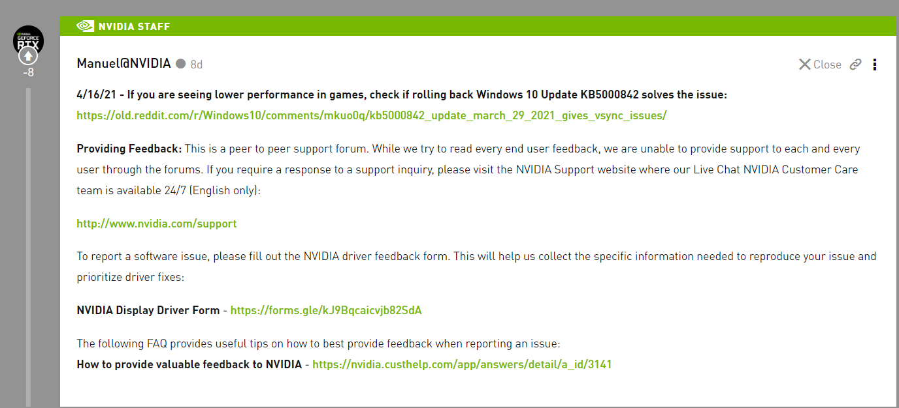

NVIDIA: it is recommended to uninstall the latest Microsoft win10 update to fix the game problem

Microsoft pushed the win10 kb5001330 system update this month. Some players reported that this version of the system will encounter problems of stuck and FPS decline when playing games.
Microsoft has yet to respond, but NVIDIA said in the official forum:
If you have performance problems, please roll back win10 to kb5000842.
NVIDIA: it is recommended to uninstall the latest Microsoft win10 update to fix the game problem
Kb5001330 version seems to have other problems, such as user feedback, because temporary user configuration is enabled, it is unable to access documents, pictures and other folders.
The kb5000842 version of NVIDIA is an optional update, which may not be installed by many users, but it doesn't matter.
In case of the above problems, please open the setting interface of win10, enter the "Windows Update" function, select "view update history", then select "uninstall update" in the new page, and then uninstall kb5001330 update.